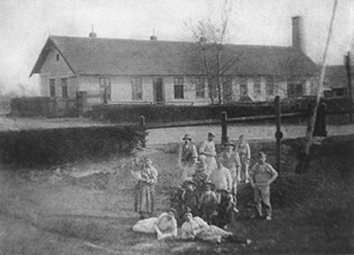

| Toepfer sein und gutes
Geschirr herzustellen ist garnicht so einfach.Dazu braucht man viel Praxis
und Erfahrung.
In der Toepferei erbt man von Generation zu Generation, und so war es auch
im Toepferstamm Stepanek.

|

|
|
1901 |
1939 |
Urgrossvater Matej Stepanek arbeitete schon Ende
des 18.Jahrhundert
in diesem Gebiet. Grossvater Karel Stepanek, geboren im Jahre 1834,
fing schon in Kasejocice an Steingutgeschirr herzustellen, aus weisser Erde,
gebrannt bei bei einer Hitze von 1300°C.
Zu dieser Zeit war dies ein grosser Vortschritt
und das Geschirr fand viele Abnehmer. Deswegen hat Grossvater auch all seine vier
Soehne das Toepfern gelernt.Von ihnen hat Josef Stepanek, geboren 1866,
an einigen Keramikwettbewerben teilgenommen und ist im Jahre 1891 nach
Amerika gegangen, wo er ueber sechs Jahre hin eine grosse Anerkennung erworben hat.
Als er zurueck kam arbeitete er noch einige Jahre bei seinem Vater.
Im Jahre 1900 wurde in Hrdejovice eine neue Toeperferei erbaut, die er ein Jahr spaeter
kaufte.
Im Bereich Hrdejovic gibt es
viele Verschiedene Arten Erde, deswege besuchte er eine staatliche Schule in Bechyne,
um leichter in die Analyze der Erde einzudringen.
Dank langzeitige praktische Erfahrung kam er auf eine
eigene Art des Mischens verschiedener Erdvarianten. Als sein aeltester Sohn Josef nach
der Ausbildung die Staatliche Keramikschule in Bechyne absolvierte war das
Hrdejovische Geschirr wegen seiner Feinheit schon sehr gefragt.
Diese laesst sich nur durch Schwemmen erzielen, und die Ausdauer beim
kochen ist das Ergebniss der richtigen Mischung und Zusammensetzung der Erde.
Nachdem der juengste Sohn die Geschaeftsschule beendete, bildete auch er sich im
Toepfern aus.
Als deren Vater im Jahre 1928 starb hatte sein Betrieb schon eingearbeitete
Nachfolger.
Beide Brueder haben durch Anschaffung spezieller Geraete zur Verarbeitung
von Erde geschafft, nach vielen Versuchen und Verbesserungen der Herstellung,
Geschirr herzustellen das hohen Temperaturen standhaelt ohne zu zerspringen.
Das Geschirr ist eine Rechtlich geschuetzte Marke
Unsere Unternehmen beschaeftigt sich auch mit sehr exsklusiven
Produkten fuer den Export in die ganze Welt, an denen sich die
Kunstfertigkeit tschechischer Haende bestaetigen kann.
Im Jahre 1950 kam die Nationalisierung.
Der Betrieb mit 23 Angestellten wurde den Eigentuemern
abgenommen und wurde so zur Gesellschaft Jihotvar, bei Luznice.
Die urspruenglichen Eigentuemer blieben in dem Betrieb angestellt, Josef als Hersteller
und Karel als Verkaufer. Sie mussten aber von ihren Loehnern
Schulden abbezahlen die wegen dem Ausbau der Raume noch vor der Socializierung
entstanden.
Spaeter durfte Karel nurnoch als Handwerker in einer zugeteilten Zementfabrik arbeiten.
Nach einigen Jahren kam er zurueck zu seiner geliebten Toepfererde nach Hrdejovice,
als Handwerker und Heizer am Ofen.
Die Soehne beider Brueder folgten
der Tradition und absolvierten das Studium in der Keramischen Schule in Bechyne.
Nach dem Jahre 1989 beantragte Karel, im Ramen des Restitutiongesetzes um
die Zurueckerstattung des ganzen urspruenglichen Eigentums. Zu dieser Zeit hatte
die Gesselschaft das Unternehmen mit einer Halle auf dem ehemaligen und dazugekauften
Grundstueck erweitert. Die alten Gebaude hatten sie nach und nach abgerissen und bei den
verbliebenen wurde angebaut. Leider war das Gesetz zur Restitution schlecht geregelt und
erlaubte so verschiedene Ausfuehrungen.
Es kam zum Prozess und die Gesselschaft Jihotvar war nicht gewollt die Fabrik
herauszugeben. Nach sechs Prozessen hat das Gericht entschlossen die alten Gebaude
abzugeben, allerdings ohne das Grundstueck.
Diese Endscheidung konnte der letzte ehemalige Eigentuemer, Karel Stepanek,
nicht mehr erleben.
Syn
Josef und Enkel Petr, der das Gewerbe bei seinem Vater erlernte, widmen sich weiterhin
in ihren Atelieren in Prag der Keramikherstellung.
Und damit fuehren sie schon in der sechsten Generation der Stepanek Keramik fort.
Karel
Stepanek 1990.
|